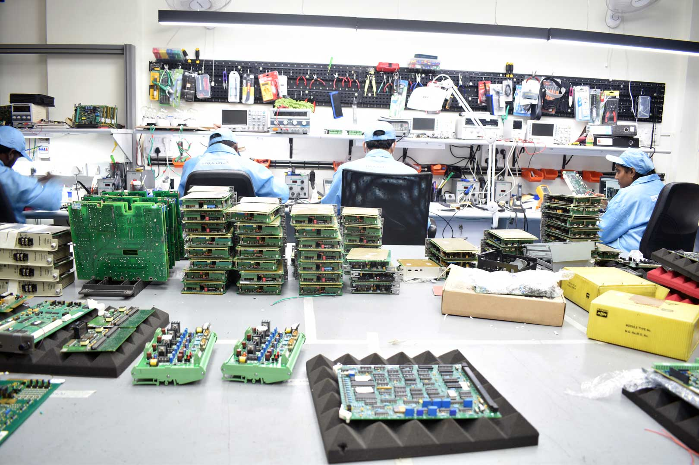
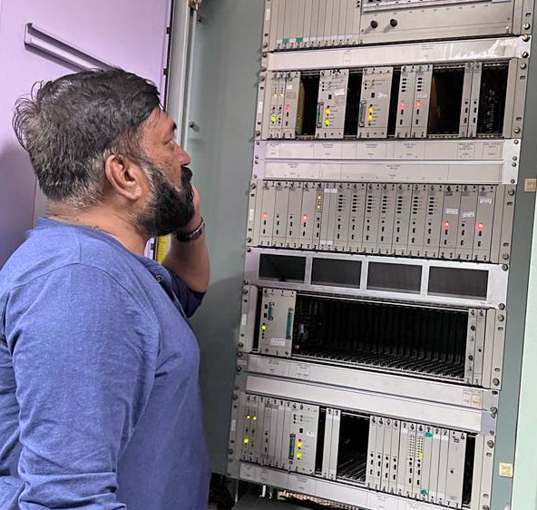

Proconex Private Limited
A Procurement Services company founded in 2019
Welcome to Proconex Pvt Ltd, a dynamic company headquartered in Bangalore, India, proudly standing as a prominent force in the realm of sales and service provision. Established in 2019 by the visionary founder, Naveen Kumari, Proconex has rapidly ascended to the zenith of the industry, specializing in the supply and repair of crucial Turbine control spares.
At Proconex, we take pride in being at the forefront of the Indian market, offering an extensive range of products and services. Our core focus lies in the supply and repair of Turbine control panels, PLC (Programmable Logic Controller), DCS (Distributed Control System), Excitation systems, LCI (Load Commutated Inverter), Vibration Monitoring System, Drive Controls, VFD (Variable Frequency Drive), and a plethora of other cutting-edge solutions. Notably, we also excel in providing repair services for obsolete parts, ensuring the longevity and efficiency of your equipment.
We provide comprehensive coverage of industrial and automation spares (CONTROL MODULES/CARDS/POWER SUPPLIES/I/O PACKS) in accordance with industry standards. Our offerings encompass products from renowned brands such as GE, SIEMENS, HONEYWELL, ALLEN BRADLEY, ABB, BENTLY NEVADA, GE FANUC, YOKOGAWA, MITSUBISHI, WOODWARD, METSO, OMRON, RUSTRONIC, BAILEY, ALSTOM, FOXBORO, and others, irrespective of make and model.
In our latest initiative, we have expanded our services to supply spares and provide repair solutions directly to end users. Our commitment includes faster turnarounds and cost-effective prices, supported by an extensive network of trusted and verified vendors, authorized distributors, importers/traders, authorized dealers, stockists, and OEMs.
We specialize in the provision of Control and Instrumentation Spares, offering a comprehensive range that includes DETECTORS, FLOW, LEVEL, TEMPERATURE & PRESSURE MEASURING DEVICES, SWITCHES, and more. Our services are customized to meet the needs of major industries, including but not limited to POWER GENERATION (GAS, THERMAL, HYDRO, WIND, AND BIOMASS), PETROCHEMICALS, REFINERIES, MINING, OIL & GAS, STEEL PLANTS, SUGAR PLANTS, PAPER MILLS, SMELTING, AND ALL OTHER METAL WORKING PLANTS, TEXTILE PLANTS, AUTOMOBILE PLANTS, PHARMACEUTICALS, AND VARIOUS PROCESSING & AUTOMATION PLANTS, in accordance with industry standards.
Our commitment to excellence is reflected in our unique approach to industrial spares and equipment. Distinguished by our expertise in refurbishing, remanufacturing, and repairing spare parts, we stand out as a reliable partner in providing top-notch solutions for the longevity and optimal performance of industrial equipment. We do repair and refurbishment of PCB boards, Control Cards, Power Cards, IGBT cards, Communication cards, etc. Proconex has become synonymous with exceptional service quality, stellar customer service, and a client-driven approach.
Commencing with promise, the company faced a significant test during the pandemic. Despite the challenges, Proconex sustained its growth momentum. With the conclusion of the pandemic, Proconex swiftly ascended to become a key player in India's turbine control spares and repair industry.
Messages from the Managing Director
“Our journey at Proconex is fueled by a vision for success, where each endeavor is a step toward achieving excellence. As the Managing Director, I am proud to lead a team dedicated to surpassing expectations, providing quality turbine control spares, and setting new industry benchmarks. Join us in transforming challenges into opportunities and redefining success in our field.” — Mr. Shahaab, Managing Director
Leading the Way: A Saga of Success & Innovation
He is a Mechanical Engineer, an Associate Member of the Institution of Engineers and also a Master in Business Administration. Beginning his career as a sales executive at Eureka Forbes, he garnered valuable experience before venturing into the sales of instant geysers. Successfully establishing his own manufacturing unit for instant geysers, Shahaab later founded Global Auto Systems, becoming a top distributor of Tartarini and Hovel Auto Gas kits in South India. After a stint with a US-based turbine spares company, Shahaab worked as a Sales Manager for over a year. Following this, he briefly joined 1B Commercials in Mumbai as a Global Manager, specializing in the dismantling of INS Vikrant. Returning to the US-based company, he resumed his role as a Sales Manager, eventually progressing to Director and Country In Charge. After working for the US-based company for five years in various roles, including Sales Manager, Director, Country In Charge, Head of Operations, and Managing Director, Shahaab leveraged his extensive knowledge to co-found Proconex with his wife, Naveen Kumari, in 2019.
Proconex, established within a short timeframe, not only specializes in turbine spares and repairs but also offers a comprehensive range of industrial and automation spares from leading brands like GE, Siemens, Honeywell, and Allen Bradley. Catering to to all major industries like power generation, refineries, steel plants and all kinds of processing and automation plants, Proconex provides control and instrumentation spares for all types and models as a solution provider.
For industries facing production halts due to discontinued turbine spares by OEMs, Proconex offers a cost-effective solution. As the go-to destination, we supply the necessary spares, saving substantial costs for turbine users. Our dedicated repair lab, manned by highly qualified engineers, is renowned for fixing almost everything, backed by warranty assurance. With reasonable prices, we now directly supply spares and offer repair services to end users, expediting business processes. Our spares, sourced from verified vendors and OEMs, make us the preferred choice for turbine control solutions in India.
In the near future, Proconex’s turbine control spares and repairs lab will strategically expand across India, with plans for global expansion in the Middle East, Africa, and beyond, generating numerous job opportunities. Shahaab envisions training programs for engineers and technicians, empowering them to establish their own turbine control repair businesses nationwide, supported by effective business development strategies.
Our Exceptional Services
Our journey began in 2019, and since then, Proconex has experienced monumental growth, a testament to our unwavering commitment to excellence. What sets us apart is our dedication to delivering exceptional service quality, epitomized by a client-driven approach and stellar customer service. We pride ourselves on offering straightforward solutions, keeping pace with the latest technological advancements to meet the evolving needs of our clients.
Our Core Offerings
At Proconex, we are dedicated to providing comprehensive coverage of industrial and automation spares in accordance with industry standards. Our offerings span a wide spectrum, including Turbine control panels, PLC (Programmable Logic Controller), DCS (Distributed Control System), Excitation, LCI (Load Commutated Inverter), Vibration Monitoring System, Drive Controls, VFD (Variable Frequency Drive), and more. We pride ourselves on not only supplying top-quality products but also offering repair services for obsolete parts.
Brand Diversity
Proconex is your gateway to a diverse array of products from renowned brands such as GE, SIEMENS, HONEYWELL, ALLEN BRADLEY, ABB, BENTLY NEVADA, GE FANUC, YOKOGAWA, MITSUBISHI, WOODWARD, METSO, OMRON, RUSTRONIC, BAILEY, ALSTOM, FOXBORO, and others. We cater to all makes and models, ensuring a one-stop solution for your industrial needs.
Latest Initiative - Direct Supply and Repair Solutions
In our latest initiative, we have expanded our services to directly supply spares and provide repair solutions to end users. Our commitment revolves around faster turnarounds and cost-effective prices, facilitated by an extensive network of trusted vendors, authorized distributors, importers/traders, authorized dealers, stockists, and OEMs.
Proconex Repair Services
Our specialized expertise extends to Control and Instrumentation Spares, covering a comprehensive range that includes DETECTORS, FLOW, LEVEL, TEMPERATURE & PRESSURE MEASURING DEVICES, SWITCHES, and more. Tailored to meet the needs of major industries, including POWER GENERATION, PETROCHEMICALS, REFINERIES, MINING, OIL & GAS, STEEL PLANTS, SUGAR PLANTS, PAPER MILLS, and various other sectors, our services adhere to industry standards.
Commitment to Excellence
At the heart of our operations is a commitment to excellence. Proconex stands out with its unique approach to industrial spares and equipment, focusing on refurbishing, remanufacturing, and repairing spare parts. Whether it’s PCB boards, Control Cards, Power Cards, IGBT cards, or Communication cards, we ensure the longevity and optimal performance of your industrial equipment.
Join Us
Choose Proconex - where commitment meets expertise, and innovation meets industry standards. Join us in shaping the future of industrial solutions and as your reliable partner, where commitment, expertise, and innovation converge to redefine industry standards.
Awards
Icons of Indian Business Award
IIB’s Industry Excellence & Leadership Award
Mr. Shahaab, Managing Director of Proconex has received the ‘Industry Excellence & Leadership’ award in 2022 for the Best Supply and Repair of Automation and Electronic Power Plant Spares and Equipment from Icons of Indian Business.
Read online » IIB’s Industry Excellence & Leadership Awards